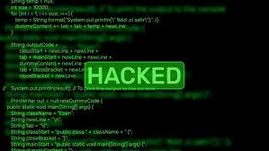

A segurança da informação é um campo crucial na era digital, onde a proteção dos dados tornou-se uma prioridade para organizações e indivíduos. Com o rápido avanço da tecnologia da informação (TI), surgem também novos desafios e ameaças à integridade, confidencialidade e disponibilidade das informações. Nesse contexto, a descoberta de informações através de varreduras, análises ou hacking em sistemas de TI tornou-se uma preocupação significativa, exigindo abordagens proativas e medidas de segurança robustas para mitigar os riscos associados.
Engenharia social
A prática de varreduras em sistemas de TI é uma técnica comumente utilizada por administradores de rede e profissionais de segurança para identificar vulnerabilidades e pontos fracos em uma infraestrutura digital. Essas varreduras geralmente envolvem o uso de ferramentas automatizadas que examinam portas de rede, serviços em execução e configurações de segurança em busca de possíveis brechas que possam ser exploradas por invasores mal-intencionados. Ao detectar e corrigir essas vulnerabilidades, as organizações podem fortalecer suas defesas cibernéticas e reduzir a probabilidade de comprometimento da segurança.
A análise forense em sistemas de TI desempenha um papel crucial na investigação de incidentes de segurança cibernética e na identificação de atividades maliciosas. Por meio da coleta e análise de evidências digitais, os especialistas forenses podem reconstruir eventos passados, determinar a extensão de uma violação de segurança e identificar os responsáveis por ela. Essa abordagem é essencial para apoiar a aplicação da lei, proteger os direitos dos indivíduos afetados e prevenir futuros ataques cibernéticos.
O hacking ético, também conhecido como teste de penetração, é uma prática controlada de simulação de ataques cibernéticos realizada por profissionais de segurança autorizados para avaliar a robustez das defesas de segurança de uma organização. Ao imitar as táticas e técnicas empregadas por hackers mal-intencionados, os testadores de penetração podem identificar falhas de segurança, explorar vulnerabilidades e recomendar medidas corretivas para fortalecer a postura de segurança de uma empresa. Essa abordagem proativa é fundamental para garantir a resistência de uma organização a ameaças cibernéticas e proteger seus ativos de informação de potenciais ataques.